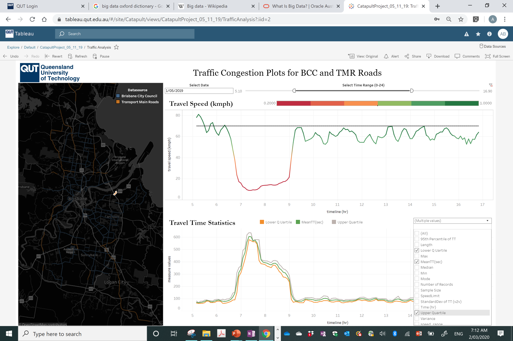

Built on a decade of delivered work.
NiFTi is not a standing start. Its founding team has already built and deployed pieces of all three layers, with government and industry partners.
Automated calibration of motorway control algorithms, removing the manual tuning burden. Delivers interfaces, tools, and dashboards that make algorithm behaviour transparent, enabling knowledge transfer so operators understand not just what the algorithm does, but why.
Multimodal arterial performance measurement, fusing signal, probe, transit, and Bluetooth data into one performance picture. Currently in active development, not yet in live operations.
A method to quantify the value of an operational change. In use within TMR and integrated into ANSPA. Co-published with industry in Transport Research Record, a joint paper with our government partners, not just by academia.
Real-time weather-responsive variable speed limits that adapt to live conditions on the network. Incorporates crash-risk modelling alongside weather signals, acting before conditions deteriorate rather than after.
A scalable performance assessment framework developed with Brisbane City Council, turning raw operational data into decision-ready insight.
Motorway algorithm cascades, an operations knowledge base, and the InteliAgent decision-support prototype.
The pattern the hub is built to repeat: research that gets adopted, deployed, and validated in operations, with our partners' names on it.
What the tools actually look like.
Not wireframes. Not prototypes. Deployed dashboards and tools already running on Queensland's network, built with our government partners.





Demonstrations from the lab and the control room.
Short recordings of the tools running on live or real data. Mute is on by default; click to unmute.